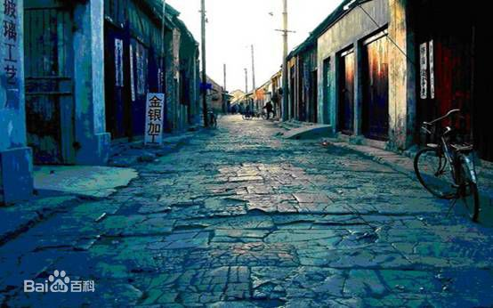

凤凰-石板老街
凤凰景点介绍
宽不足5米的青石板街，自道门口往西，经十字街、东正街、西正街、回龙阁、营哨冲、陡山喇、接官亭、沈从文墓地直至天下第一泉，全长3000多米。是凤凰最繁华的商业街。
凤凰古城老街,凤凰古城石板街,湘西凤凰古城石板街：湘西凤凰古城的老街不长，大概只有五百米左右，也不宽，仅容五六个人并排而行，街道是用青条石一块一块的铺成的。街道两边都是明清古建筑，临街的一面或用来做商店，或用来做旅店，旅店无一例外的在门口高悬一牌匾，上书“xx客栈”，其他地方想必少见，不过倒也落得和谐。人很少，街上流淌着一种宁静，就像沱江水一样静静地流淌。临街的商店大都出售凤凰当地的特产，店家只是静静的坐在那里，并不刻意招揽客人，即便是客人问价，也是友好地低声应答，生怕破坏了这份宁静似的。
凤凰的特产有蜡染、姜糖还有银饰。老街上几乎每家店都出售这几样东西。问梅子带什么给朋友做礼物。梅子想了想：“带点小银饰吧!银会被氧化，会变色发黄，但是古旧的颜色下是一颗永恒的心!”这句话，我惊为天语!